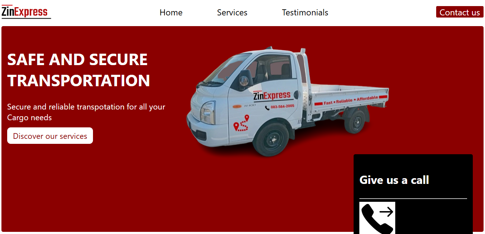
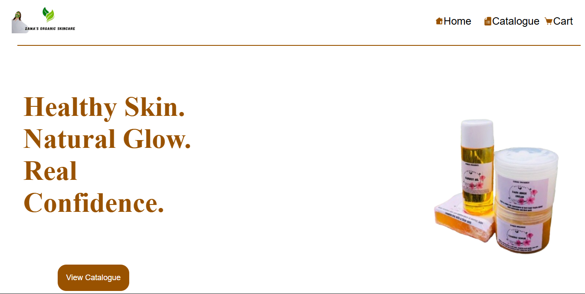

Backend-focused junior Java developer passionate about building scalable APIs and database-driven systems. I combine strong frontend skills with growing backend expertise to develop clean, efficient, and production-ready applications.
2+
Projects
2+
Clients
3
Highlights
I am an aspiring Java Full-Stack Developer and final-year ICT student
specializing in Application Development, with a strong focus on building practical,
real-world software solutions.
I have solid experience in frontend development using JavaScript, HTML, and CSS,
where I develop responsive, user-focused web applications with clean, maintainable code.
I understand how to translate ideas into functional interfaces that deliver a smooth and
intuitive user experience.
Beyond the frontend, I am actively advancing into Java-based backend development, working
with REST APIs, CRUD operations, and database integration to build complete, end-to-end systems.
I am particularly interested in designing scalable applications and understanding how
systems work behind the scenes.
I approach development with a problem-solving mindset, always aiming to build systems
that are efficient, reliable, and aligned with real business needs.
My goal is to grow into a high-impact developer within a performance-driven environment,
where I can contribute to meaningful projects while continuously improving my technical depth.
Name
Siyabonga Zindela
siyabongazindela@outlook.com
Experience
1+ Years
Role
Aspiring Backend Java Developer (Full-Stack Capable)
Location
Durban
Languages
isiZulu, English
• WSU — Walter Sisulu University
Diploma in Information and Communication Technology (Application
Development)
2024 – 2026
Focused on application development with practical training in
backend-oriented systems, database-driven applications, and
web-based solutions. Gained hands-on experience designing,
building, and maintaining applications aligned with real-world
business requirements.
A refined tech stack backed by solid IT fundamentals and real-world projects.
Backend Development
Java
Rest API Design
CRUD Operations
Server-Side Logic
Backend Architecture
Authentication & Authorization (JWT)
Databases
SQL
Database Modeling
Relational Database Design
Web Development
HTML
CSS
Responsive Web Design
Javascript
UI Intergration with Backend Systems
Tools & Workflow
Intellij
Git & GitHub
MySQL
Figma

Developed a responsive website for ZinExpress to establish a clean and professional online presence. Built with scalability in mind to support future system expansion and added functionality. Planned integration of a Java-based backend for full web system development as the business grows.

Developed a responsive e-commerce web application with dynamic UI components and structured product pages. Integrated PayFast for secure payments and implemented client-side logic for cart and navigation functionality. Focused on usability, performance, and clean UI design to enhance the overall user experience.
Download a clean, concise PDF resume highlighting my backend Java skills, professional experience, education, and selected projects. Ideal for recruiters, hiring managers, and technical interviews.
Download Resume (PDF)For backend Java development opportunities, professional collaborations, or technical discussions, please feel free to get in touch.